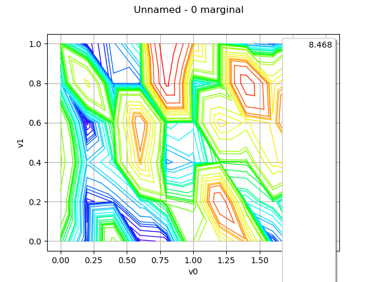
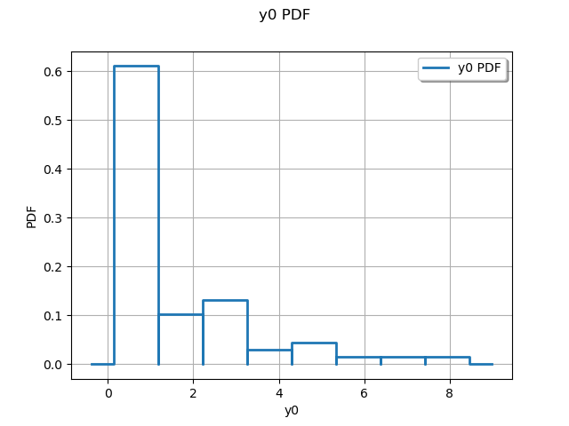
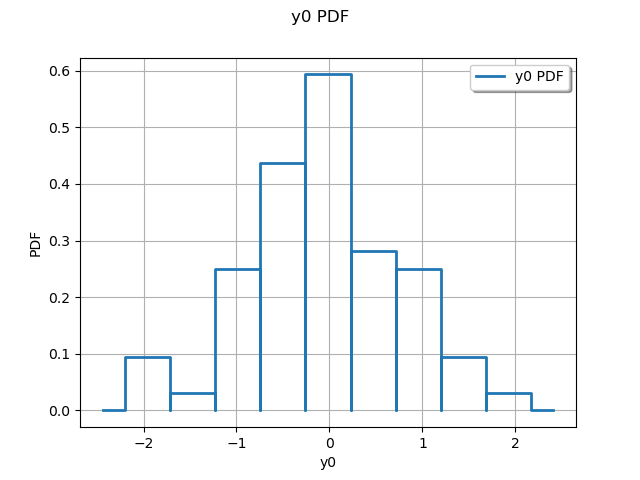

Note
Go to the end to download the full example code
Use the Box-Cox transformation¶
The objective of this Use Case is to estimate a Box Cox transformation
from a field which all values are positive (eventually after a shift
to satisfy the positiveness) and to apply it on the field.
The object BoxCoxFactory enables to create a factory of
Box Cox transformation.
Then, we estimate the Box Cox transformation
 from the initial field values
from the initial field values
 thanks to the method
build of the object BoxCoxFactory, which produces an object of
type BoxCoxTransform.
If the field values have
some negative values, it is possible to translate the values with
respect a given shift
thanks to the method
build of the object BoxCoxFactory, which produces an object of
type BoxCoxTransform.
If the field values have
some negative values, it is possible to translate the values with
respect a given shift  which has to be mentioned
either at the creation of the object BoxCoxFactory or when using the
method build.
Then the Box Cox transformation is the composition of
and this translation.
which has to be mentioned
either at the creation of the object BoxCoxFactory or when using the
method build.
Then the Box Cox transformation is the composition of
and this translation.
The object BoxCoxTransform enables to:
transform the field values
of dimension  into the values
into the values  with
stabilized variance, such that for each vertex
with
stabilized variance, such that for each vertex  we
have:
we
have:
or

thanks to the operand (). The field based on the values
 shares the same mesh than the initial field.
shares the same mesh than the initial field.create the inverse Box Cox transformation such that :

or

thanks to the method getInverse() which produces an object of type InverseBoxCoxTransform that can be evaluated on a field. The new field based shares the same mesh than the initial field.
import openturns as ot
import openturns.viewer as viewer
from matplotlib import pylab as plt
ot.Log.Show(ot.Log.NONE)
Define a process
myIndices = [10, 5]
myMesher = ot.IntervalMesher(myIndices)
myInterval = ot.Interval([0.0, 0.0], [2.0, 1.0])
myMesh = myMesher.build(myInterval)
amplitude = [1.0]
scale = [0.2, 0.2]
myCovModel = ot.ExponentialModel(scale, amplitude)
myXproc = ot.GaussianProcess(myCovModel, myMesh)
g = ot.SymbolicFunction(["x1"], ["exp(x1)"])
myDynTransform = ot.ValueFunction(g, myMesh)
myXtProcess = ot.CompositeProcess(myDynTransform, myXproc)
Draw a field
field = myXtProcess.getRealization()
graph = field.drawMarginal(0)
view = viewer.View(graph)

Draw values
marginal = ot.HistogramFactory().build(field.getValues())
graph = marginal.drawPDF()
view = viewer.View(graph)

Build the transformed field through Box-Cox
myModelTransform = ot.BoxCoxFactory().build(field)
myStabilizedField = myModelTransform(field)
Draw values
marginal = ot.HistogramFactory().build(myStabilizedField.getValues())
graph = marginal.drawPDF()
view = viewer.View(graph)
plt.show()
